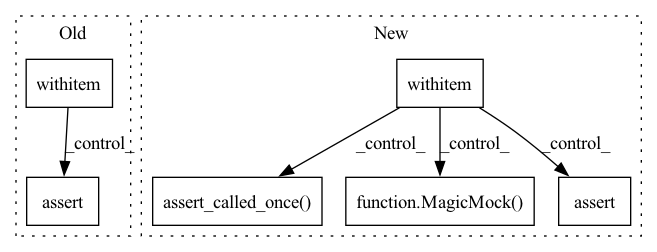

Pattern ID :10921
Before Change
runner = MLRunner(experiment_config=experiment_config, container=container)
with patch.object(container, "get_data_module"):
with patch .object(container, "on_run_extra_validation_epoch") as mock_on_run_extra_validation_epoch:
with patch("health_ml.run_ml.create_lightning_trainer") as mock_create_trainer:
runner.setup()
mock_trainer = MagicMock()
mock_storing_logger = MagicMock()
mock_create_trainer.return_value = mock_trainer, mock_storing_logger
runner.init_training()
assert runner.trainer == mock_trainer
assert runner.storing_logger == mock_storing_logger
mock_trainer.validate = Mock()
if run_extra_val_epoch:
with patch.object(runner, "validate_model_weights") as mock_validate_model_weights:
runner.run_validation()
mock_validate_model_weights.assert_called_once()
assert mock_on_run_extra_validation_epoch.called == run_extra_val_epoch
assert hasattr(container.model, "on_run_extra_validation_epoch")
assert mock_trainer.validate.called == run_extra_val_epoch
After Change
ml_runner_with_run_id.init_training()
mock_datamodule = MagicMock()
with patch("health_ml.run_ml.create_lightning_trainer") as mock_create_trainer:
with patch .object(ml_runner_with_run_id.container, "get_data_module", return_value=mock_datamodule):
mock_trainer = MagicMock()
mock_create_trainer.return_value = mock_trainer, MagicMock()
ml_runner_with_run_id.init_inference()
assert ml_runner_with_run_id.trainer == mock_trainer
mock_trainer.validate = Mock()
ml_runner_with_run_id.run_validation()
if run_extra_val_epoch or run_inference_only:
mock_trainer.validate.assert_called_once()
assert mock_trainer.validate.call_args[1]["ckpt_path"] == ml_runner_with_run_id.inference_checkpoint
assert mock_trainer.validate.call_args[1]["datamodule"] == mock_datamodule
else:
assert "Skipping extra validation" in caplog.messages[-1]
mock_trainer.validate.assert_not_called()
In pattern: SUPERPATTERN
Frequency: 3
Non-data size: 6
Instances Fragment ID: 37741439
Project Name: microsoft/hi-ml
Commit Name: 3d632766440a7856712cb0ba40ee6f5cac9fd5c1
Time: 2023-01-18
Author: 37396332+kenza-bouzid@users.noreply.github.com
File Name: hi-ml/testhiml/testhiml/test_run_ml.py
M Class Name: AnonimousClass
N Class Name: AnonimousClass
M Method Name: test_run_validation(4)
N Method Name: test_run_validation(1)
M Parent Class:
N Parent Class:
M File Name: hi-ml/testhiml/testhiml/test_run_ml.py
N File Name: hi-ml/testhiml/testhiml/test_run_ml.py
M Start Line: 165
M End Line: 195
N Start Line: 270
N End Line: 292
Before Change
ml_runner_with_container.setup()
assert not ml_runner_with_container.checkpoint_handler.has_continued_training
with patch ("health_ml.run_ml.create_lightning_trainer") as mock_create_trainer:
with patch.multiple(
ml_runner_with_container,
checkpoint_handler=mock.DEFAULT,
load_model_checkpoint=mock.DEFAULT,
run_training=mock.DEFAULT,
run_validation=mock.DEFAULT,
run_inference=mock.DEFAULT,
) as mocks:
mock_create_trainer.return_value = MagicMock(), MagicMock()
ml_runner_with_container.run()
// Checkpoints will only be loaded explicitly when doing training. Checkpoint loading is guarded
// also by checking if the model has a custom test step, this is always True for the HelloWorld model used
// here.
assert ml_runner_with_container.container.has_custom_test_step()
assert mocks["load_model_checkpoint"].called != run_inference_only
assert ml_runner_with_container._has_setup_run
assert ml_runner_with_container.checkpoint_handler.has_continued_training != run_inference_only
assert mocks["run_training"].called != run_inference_only
assert mocks["run_validation"].called == (not run_inference_only and run_extra_val_epoch)
mocks["run_inference"].assert_called_once()
After Change
ml_runner_with_container.setup()
assert not ml_runner_with_container.checkpoint_handler.has_continued_training
with patch ("health_ml.run_ml.create_lightning_trainer", return_value=(MagicMock(), MagicMock())):
with patch.multiple(
ml_runner_with_container,
checkpoint_handler=mock.DEFAULT,
run_training=mock.DEFAULT,
run_validation=mock.DEFAULT,
run_inference=mock.DEFAULT,
after_ddp_cleanup=mock.DEFAULT,
) as mocks:
ml_runner_with_container.run()
assert ml_runner_with_container.container.has_custom_test_step()
assert ml_runner_with_container._has_setup_run
assert ml_runner_with_container.checkpoint_handler.has_continued_training != run_inference_only
assert mocks["run_training"].called != run_inference_only
assert mocks["after_ddp_cleanup"].called != run_inference_only
assert mocks["checkpoint_handler"].additional_training_done.called != run_inference_only
mocks["run_validation"].assert_called_once()
mocks["run_inference"].assert_called_once()
@pytest.mark.parametrize("run_extra_val_epoch", [True, False]) Fragment ID: 37741529
Project Name: microsoft/hi-ml
Commit Name: 3d632766440a7856712cb0ba40ee6f5cac9fd5c1
Time: 2023-01-18
Author: 37396332+kenza-bouzid@users.noreply.github.com
File Name: hi-ml/testhiml/testhiml/test_run_ml.py
M Class Name: AnonimousClass
N Class Name: AnonimousClass
M Method Name: test_run(3)
N Method Name: test_run(3)
M Parent Class:
N Parent Class:
M File Name: hi-ml/testhiml/testhiml/test_run_ml.py
N File Name: hi-ml/testhiml/testhiml/test_run_ml.py
M Start Line: 299
M End Line: 320
N Start Line: 360
N End Line: 377
Before Change
ml_runner_with_run_id.container.max_num_gpus = 0
ml_runner_with_run_id.container.max_epochs += 10
assert ml_runner_with_run_id.checkpoint_handler.trained_weights_path
with patch .multiple(ml_runner_with_run_id, run_validation=mock.DEFAULT, run_inference=mock.DEFAULT) as mocks:
ml_runner_with_run_id.run()
assert mocks["run_validation"].called == run_extra_val_epoch
mocks["run_inference"].assert_called_once()
After Change
ml_runner_with_run_id.container.max_epochs += 10
assert ml_runner_with_run_id.checkpoint_handler.trained_weights_path
mock_trainer = MagicMock()
with patch ("health_ml.run_ml.create_lightning_trainer", return_value=(mock_trainer, MagicMock())):
with patch.object(ml_runner_with_run_id.container, "get_checkpoint_to_test") as mock_get_checkpoint_to_test:
with patch.object(ml_runner_with_run_id, "run_inference") as mock_run_inference:
with patch.object(ml_runner_with_run_id, "after_ddp_cleanup") as mock_after_ddp_cleanup:
mock_get_checkpoint_to_test.return_value = MagicMock(is_file=MagicMock(return_value=True))
ml_runner_with_run_id.run()
mock_after_ddp_cleanup.assert_called_once()
mock_get_checkpoint_to_test.assert_called_once()
assert mock_trainer.validate.called == run_extra_val_epoch
mock_run_inference.assert_called_once()
Fragment ID: 37741541
Project Name: microsoft/hi-ml
Commit Name: 3d632766440a7856712cb0ba40ee6f5cac9fd5c1
Time: 2023-01-18
Author: 37396332+kenza-bouzid@users.noreply.github.com
File Name: hi-ml/testhiml/testhiml/test_run_ml.py
M Class Name: AnonimousClass
N Class Name: AnonimousClass
M Method Name: test_resume_training_from_run_id(2)
N Method Name: test_resume_training_from_run_id(2)
M Parent Class:
N Parent Class:
M File Name: hi-ml/testhiml/testhiml/test_run_ml.py
N File Name: hi-ml/testhiml/testhiml/test_run_ml.py
M Start Line: 352
M End Line: 357
N Start Line: 414
N End Line: 426